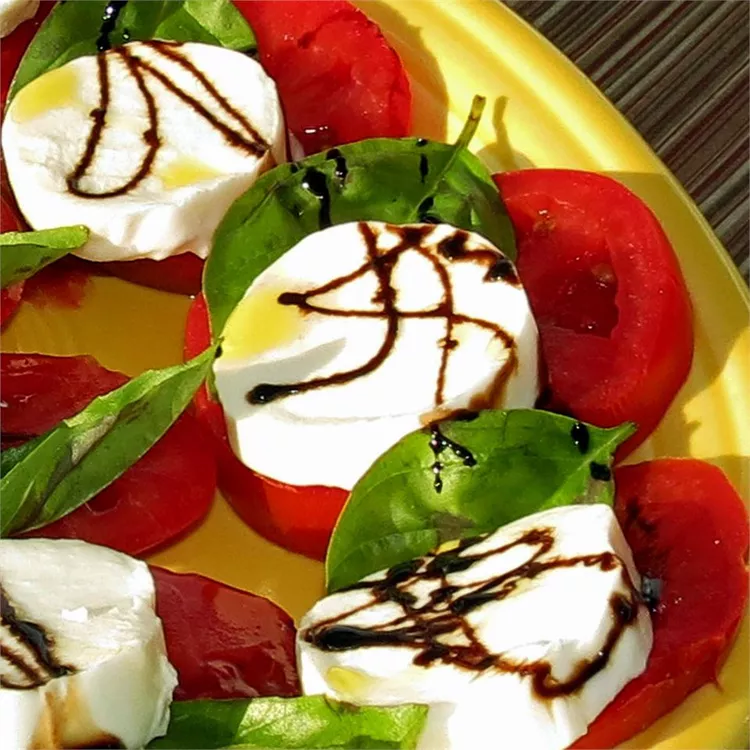

Caprese Salad

Description
Caprese salad is a classic light dish from Italy, a simple pairing of mozzarella cheese with thick tomato
slices, all drizzled over with a lovely vinegar reduction and sprinkled with basil. The result is a fresh,
satisfying salad that naturally suits the summer climate, but whose elegance cannot be denied at any time of year.
Ingredients
- Mozzarella cheese
- Large tomato
- Balsamic vinegar
- Honey
- Basil leaves
Steps
- Slice the mozzarella and the tomato into flat, regular pieces around 1-2cm thick
- In a separate bowl, combine the balsamic vinegar with the honey
- Lay the tomato and mozzarella slices onto a plate, one on top of the other
- Sprinkle the basil leaves over the slices, then drizzle over the reduction